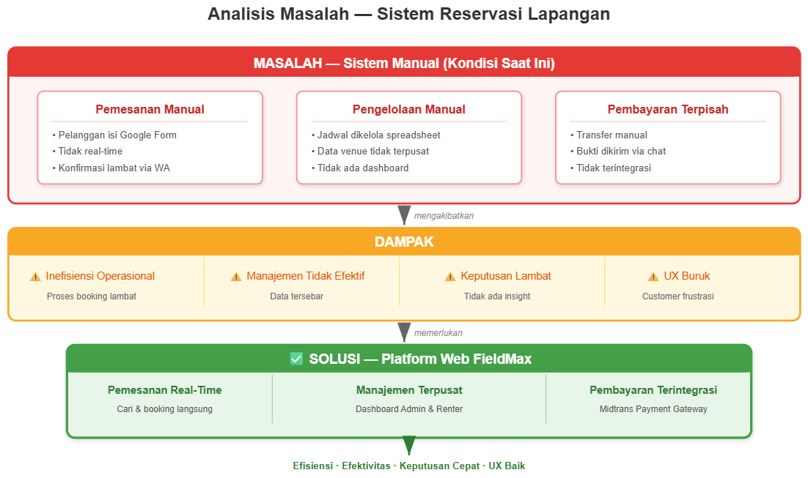
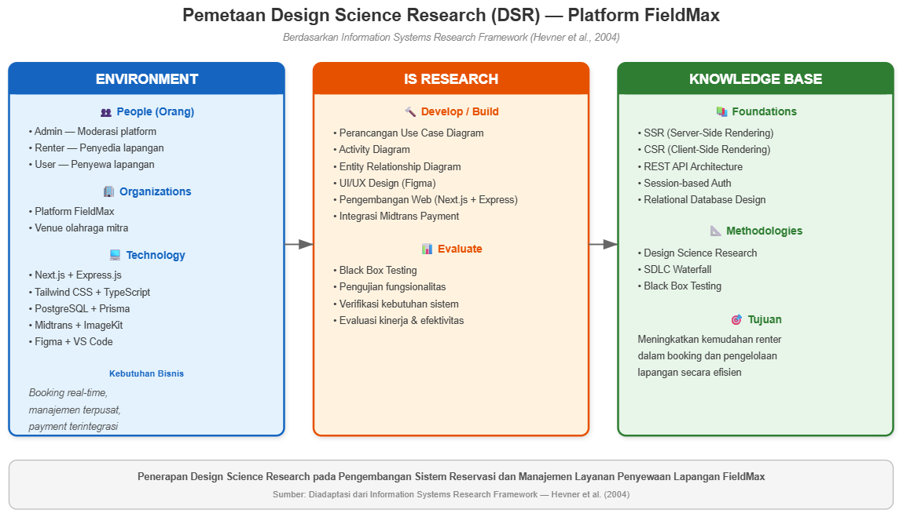
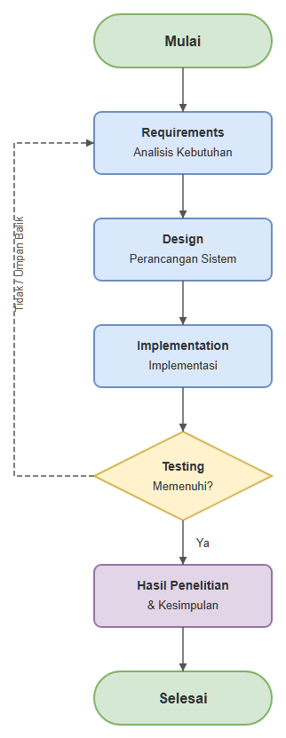
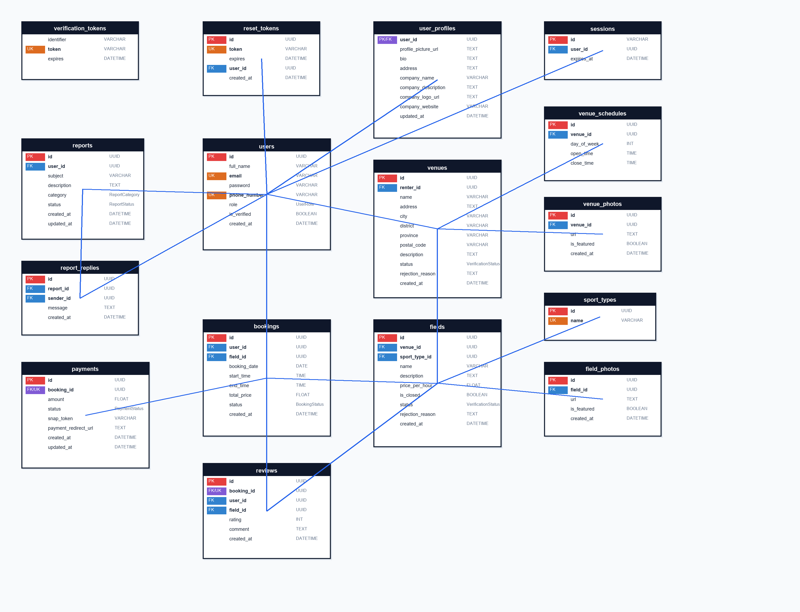
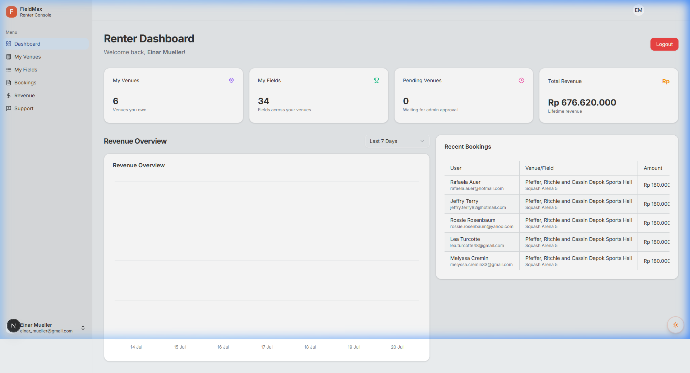
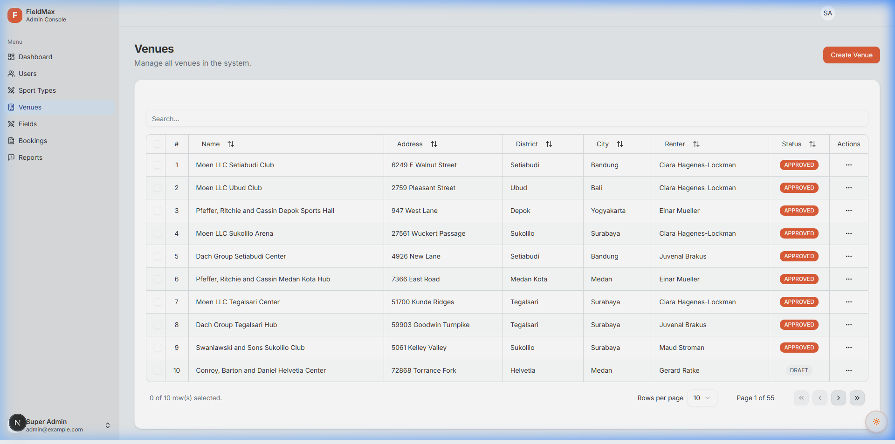

RANCANG BANGUN SISTEM INFORMASI RESERVASI DAN FASILITAS OLAHRAGA MULTI-TENANT BERBASIS WEB (STUDI KASUS: PLATFORM FIELDMAX)
Dr. Eng Supri Bin Hj Amir, S.Si., M.Eng.
Edy Saputra Rusdi, S.Si., M.Si.
Dr. Hendra, S.Si., M.Kom.
Latar Belakang: Tren & Kebutuhan Platform
Lonjakan kesadaran gaya hidup sehat mendorong peningkatan pesat aktivitas olahraga kelompok (futsal, bulu tangkis, bola basket, dan mini soccer) di perkotaan.
Namun, mayoritas sistem yang ada saat ini bersifat terfragmentasi pada satu sarana saja (single-venue), sehingga calon penyewa kesulitan mengeksplorasi perbandingan fasilitas, tarif, dan ketersediaan jadwal secara terpusat.
Latar Belakang: 4 Masalah Sistem Konvensional
- • Bentrok Jadwal (Double Booking): Ketiadaan kendali konkurensi (concurrency control) memicu jadwal ganda saat jam sibuk.
- • Manipulasi Struk Transfer: Verifikasi transfer manual lambat dan rentan terhadap pemalsuan bukti transfer fiktif.
- • Ketiadaan Informasi Real-Time: Calon penyewa harus menunggu konfirmasi berulang kali dari admin pengelola.
- • Inefisiensi Rekapitulasi Finansial: Mitra pemilik sarana (Renter) kesulitan merekapitulasi omzet dan riwayat sewa secara otomatis.
Analisis Masalah Sistem Manual vs Solusi

Rumusan Masalah
- 1. Bagaimana merancang dan membangun sistem informasi reservasi dan fasilitas olahraga multi-tenant berbasis web (FieldMax) yang mampu mengotomatisasi proses bisnis dan menyediakan layanan terpadu?
- 2. Bagaimana menguji dan membuktikan keandalan sistem informasi FieldMax menggunakan metode Black Box Testing dalam mengeliminasi terjadinya bentrok jadwal (double booking)?
Tujuan Penelitian
- 1. Merancang dan mengimplementasikan platform FieldMax berbasis Full-Stack TypeScript Monorepo guna mendigitalisasi pengelolaan sarana olahraga bagi User, Renter, dan Admin.
- 2. Menguji dan membuktikan secara empiris keandalan sistem menggunakan Black Box Testing dalam mencegah dan mengeliminasi terjadinya pemesanan ganda (double booking).
Batasan Masalah
- 1. Arsitektur Web Responsif: Next.js 16 (App Router) pada Front End dan Express.js 5 pada Back End berbasis TypeScript.
- 2. Basis Data & Transaksi: PostgreSQL 16 dengan Prisma ORM, serta pembayaran digital Midtrans Snap (QRIS, VA, e-Wallet).
- 3. Layanan Pendukung: ImageKit CDN (media foto), Nodemailer SMTP (token email), dan otentikasi berbasis sesi di database.
- 4. Ruang Lingkup Uji: Fungsionalitas Black Box Testing untuk verifikasi proses bisnis dan eliminasi double booking.
Manfaat Penelitian
- 1. Bagi Pelanggan (User): Kepastian ketersediaan jadwal real-time, eksplorasi multi-cabor, dan transaksi digital mandiri 24/7.
- 2. Bagi Pemilik Sarana (Renter): Otonomi manajemen jadwal & tarif per jam, zero double booking, serta analitik omzet otomatis.
- 3. Bagi Administrator (Admin): Kontrol terpusat moderasi legalitas venue/lapangan serta penanganan tiket pengaduan.
- 4. Bagi Teoretis & Akademik: Rujukan penerapan DSR dan Waterfall SDLC pada sistem informasi multi-tenant modern.
Waktu dan Lokasi Penelitian
Penelitian dilaksanakan pada bulan Juli 2025 sampai November 2025 bertempat di Kota Makassar, Sulawesi Selatan (Tabel 4 Skripsi).
| No | Tahapan Penelitian | Juli | Agustus | September | Oktober | November |
|---|---|---|---|---|---|---|
| 1 | Studi Literatur | ✓ | ✓ | |||
| 2 | Analisis Kebutuhan (Requirements) | ✓ | ||||
| 3 | Desain Sistem (Design) | ✓ | ✓ | |||
| 4 | Implementasi Sistem (Implementation) | ✓ | ✓ | |||
| 5 | Pengujian Sistem (Testing) | ✓ | ✓ | |||
| 6 | Pemeliharaan & Dokumentasi (Maintenance) | ✓ |
Kerangka Design Science Research (DSR)

Metode Pengumpulan Data: Studi Literatur
Pengumpulan data dilakukan secara komprehensif melalui Studi Literatur (Literature Review) mencakup:
- 1. Jurnal Ilmiah Terakreditasi: Mengkaji isu konkurensi, eliminasi double booking, arsitektur multi-tenant, dan integrasi payment gateway.
- 2. Buku Teks RPL & Sistem Informasi: Teori pemodelan UML (Pressman, 2010), Waterfall SDLC (Pfleeger & Atlee, 2010), dan kerangka DSR (Hevner et al., 2004).
- 3. Dokumentasi Teknis Resmi: Spesifikasi Next.js 16 App Router, Express.js 5, PostgreSQL 16, Prisma ORM, Midtrans API, dan ImageKit SDK.
Metode Pengembangan: Waterfall SDLC
- 1. Requirements: Analisis 10 kendala sistem manual dan elisitasi 22 Use Case fungsional.
- 2. Design: Perancangan Use Case, Activity Diagram, antarmuka Figma, dan 16 relasi ERD.
- 3. Implementation: Pengkodean Next.js 16, Express.js 5, Prisma ORM, & PostgreSQL 16.
- 4. Testing: Pengujian Black Box 76 kasus uji & 7 skenario matematis bentrok jadwal.
- 5. Maintenance: Optimasi performa kueri basis data dan pemeliharaan server berkala.
Tahapan Penelitian (Alur Sistematis)

- 1. Mulai & Studi Literatur: Identifikasi masalah riil & landasan teori DSR Hevner.
- 2. Requirements (Analisis): Elisitasi kebutuhan fungsional 3 peran (User, Renter, Admin).
- 3. Design (Perancangan): Pemodelan 22 Use Case, Activity Diagram, Figma, & 16 tabel ERD.
- 4. Implementation: Next.js 16 App Router, Express.js 5, Prisma ORM, & PostgreSQL 16.
- 5. Testing (Evaluasi): Uji 76 skenario Black Box & 7 formula matematis bentrok jadwal.
- 6. Hasil Penelitian & Selesai: Dokumentasi naskah komprehensif, publikasi, & deployment.
Perancangan Sistem: 22 Use Cases Terpadu
- 1.Daftar dan Login Akun
- 2.Cari dan Filter Lapangan
- 3.Lihat Detail Venue & Lapangan
- 4.Reservasi Slot Jadwal Real-Time
- 5.Bayar via Midtrans Snap
- 6.Lihat Riwayat Pemesanan
- 7.Beri Rating Ulasan Lapangan
- 8.Buat Tiket Pengaduan Kendala
- 1.Daftar dan Login Mitra Bisnis
- 2.Kelola Profil Venue & Jam Operasional
- 3.Kelola Lapangan & Tarif per Jam
- 4.Ajukan Venue & Lapangan ke Admin
- 5.Kelola & Pantau Pemesanan Masuk
- 6.Lihat Analitik Grafik Pendapatan
- 7.Kirim Tiket Pengaduan ke Admin
- 1.Login Panel Administrasi
- 2.Lihat Dashboard Statistik Ekosistem
- 3.Kelola & Verifikasi Akun Pengguna
- 4.Kelola Master Data Sport Types
- 5.Moderasi Venue dan Unit Lapangan
- 6.Pantau Pemesanan & Pembayaran
- 7.Kelola & Resolusi Tiket Pengaduan
Implementasi Front-End & Alasan Pemilihan
- 1. Server-Side Rendering (SSR) & App Router: Mempercepat waktu render awal (initial load) katalog venue, pemisahan rute dinamis modular, dan performa tinggi ramah SEO.
- 2. Tailwind CSS v4 & shadcn/ui: Menjamin konsistensi visual modern, komponen antarmuka yang aksesibel, serta tata letak responsif di peramban mobile dan desktop.
- 3. TanStack React Query: Manajemen state asinkron dan caching otomatis ketersediaan jadwal slot sewa, menghemat beban lalu lintas data ke peladen.
Implementasi Back-End & Alasan Pemilihan
- 1. Pola Three-Tier (Routes -> Controllers -> Services): Memisahkan logika bisnis dari protokol HTTP dan akses data sehingga sistem modular, terstruktur, dan mudah dirawat.
- 2. Full-Stack TypeScript & Zod: Memberikan jaminan keamanan tipe data (End-to-End Type Safety) antara front-end dan back-end guna mencegah galat tipe data API.
- 3. Session-Based Auth (HttpOnly Cookie): Menyimpan status otentikasi aman di basis data, melindungi sesi pengguna dari serangan pencurian token (XSS).
Implementasi Basis Data & Alasan Pemilihan
- 1. PostgreSQL MVCC & Transaksi ACID: Menangani konkurensi reservasi secara atomik saat banyak pengguna memesan slot waktu secara serentak tanpa deadlock data.
- 2. Prisma ORM (Schema Migration & Client): Menyediakan akses data type-safe, migrasi deklaratif otomatis, serta proteksi terintegrasi dari SQL Injection.
- 3. UUID (Universally Unique Identifier): Mengamankan entitas data dari serangan enumerasi ID berurutan dan menjamin keunikan kunci primer lintas tabel.
Integrasi Layanan Pihak Ketiga & Alasan
- 1. Midtrans Snap API (Payment Gateway): Otomasi verifikasi pembayaran digital Indonesia (QRIS, VA, e-Wallet) via Webhook Callback tanpa verifikasi manual bukti struk.
- 2. ImageKit CDN (Media Cloud Storage): Kompresi dan pengoptimalan resolusi foto fasilitas olahraga secara real-time, mempercepat pemuatan halaman web.
- 3. SMTP Nodemailer (Email Notification): Otomasi pengiriman kode OTP verifikasi akun 6 digit dan tautan pemulihan kata sandi (reset password) secara instan.
Implementasi Basis Data: 16 Tabel Relasional

Implementasi Basis Data: Daftar Enum (Tabel 5)
RENTER
ADMIN
}
CONFIRMED
CANCELLED
COMPLETED
}
PAID
EXPIRED
FAILED
}
PENDING
APPROVED
REJECTED
}
RESOLVED
}
PAYMENT, OTHER
}
Struktur Tabel: users & sessions (Tabel 6)
| Nama Field | Tipe Field | Keterangan | Default |
|---|---|---|---|
| id | String (UUID) | Primary Key | uuid() |
| full_name | String | Nama lengkap pengguna | No Default |
| String | Email unik untuk login | No Default | |
| password | String | Hash password akun (bcrypt) | No Default |
| role | UserRole | Hak akses (USER/RENTER/ADMIN) | USER |
| is_verified | Boolean | Status verifikasi OTP email | false |
Struktur Tabel: venues & bookings (Tabel 11 & 16)
| Nama Field | Tipe Field | Keterangan | Default |
|---|---|---|---|
| venues.id | String (UUID) | Primary Key | uuid() |
| venues.renter_id | String | Foreign Key ke users.id | No Default |
| venues.status | VerificationStatus | Status persetujuan admin | DRAFT |
| bookings.id | String (UUID) | Primary Key | uuid() |
| bookings.field_id | String | Foreign Key ke fields.id | No Default |
| bookings.status | BookingStatus | Status transaksi reservasi | PENDING |
Logika Pencegahan Bentrok Jadwal
- ✓ Filter Status Kueri: Memeriksa reservasi aktif berstatus
PENDINGdanCONFIRMED. - ✓ Presisi Batas Jam: Mengizinkan jam berdampingan (Adjacent Boundary, misal 08.00–10.00 & 10.00–12.00).
- ✓ Two-Phase Status Locking: Slot terkunci 15 menit saat checkout dan otomatis lepas (Auto-Release) bila kedaluwarsa.
Hasil Evaluasi 7 Skenario Bentrok (Tabel 22)
| No | Skenario Uji Bentrok (Case) | Kondisi DB vs Permintaan Baru | Hasil Evaluasi |
|---|---|---|---|
| 1 | Exact Slot Match (Jam Sama) | Eksis: 08.00–10.00 (CONFIRMED) | Baru: 08.00–10.00 | 100% Valid (Ditolak) |
| 2 | Start-Time Overlap (Tumpang Awal) | Eksis: 08.00–10.00 (CONFIRMED) | Baru: 07.00–09.00 | 100% Valid (Ditolak) |
| 3 | End-Time Overlap (Tumpang Akhir) | Eksis: 08.00–10.00 (CONFIRMED) | Baru: 09.00–11.00 | 100% Valid (Ditolak) |
| 4 | Enclosing Overlap (Tumpang Tengah) | Eksis: 08.00–12.00 (PENDING) | Baru: 09.00–11.00 | 100% Valid (Ditolak) |
| 5 | Adjacent Boundary (Berdampingan) | Eksis: 08.00–10.00 (CONFIRMED) | Baru: 10.00–12.00 | 100% Valid (Diterima) |
| 6 | Simultaneous Booking (Serentak) | Dua user memesan slot 14.00–16.00 bersamaan | 100% Valid (1 Terima, 1 Tolak) |
| 7 | Auto-Release on Expire/Cancel | Slot 16.00–18.00 PENDING kedaluwarsa | 100% Valid (Slot Terbuka) |
Hasil Pengujian Black Box (6 Modul Sistem)
| No | Modul Pengujian (Tabel Skripsi) | Cakupan Pengujian Fungsional | Hasil Evaluasi |
|---|---|---|---|
| 1 | Halaman Utama & Pencarian (Tabel 22) | Filter cabor, geolokasi venue, detail tarif & ketersediaan | 100% Valid (Berhasil) |
| 2 | Otentikasi & Manajemen Akun (Tabel 23) | Registrasi, OTP email, login session, proteksi role RBAC | 100% Valid (Berhasil) |
| 3 | Reservasi & Pembayaran Midtrans (Tabel 24) | Booking slot waktu, invoice Snap Midtrans, webhook otomatis | 100% Valid (Berhasil) |
| 4 | Ulasan Lapangan & Pengaduan (Tabel 25) | Rating bintang, ulasan pengguna, tiket komplain & respon | 100% Valid (Berhasil) |
| 5 | Pengelolaan Sarana Mitra/Renter (Tabel 26) | CRUD venue, jam operasional, tarif lapangan, analitik omzet | 100% Valid (Berhasil) |
| 6 | Panel Moderasi Administrator (Tabel 27) | Verifikasi legalitas venue, moderasi lapangan, master sport | 100% Valid (Berhasil) |
User Interface: Guest & User


User Interface: Renter & Administrator



Kesimpulan Penelitian
- 1. Rancang Bangun Sistem Terpadu (Build): Platform FieldMax berhasil dibangun dengan Full-Stack TypeScript Monorepo (Next.js 16, Express.js 5, Prisma ORM, PostgreSQL 16, dan Midtrans Snap) yang mengintegrasikan 22 use cases untuk 3 peran pengguna secara efisien.
- 2. Evaluasi Eliminasi Double Booking (Evaluate): Pengujian fungsionalitas Black Box Testing pada 6 modul utama (Tabel 22–27) dan validasi empiris 7 skenario irisan waktu terbukti 100% valid mengeliminasi potensi jadwal ganda (double booking) serta membebaskan kembali slot sewa yang kedaluwarsa secara otomatis.
Saran & Rekomendasi Selanjutnya
- 1. Aplikasi Mobile (Native / PWA): Pengembangan aplikasi bergerak yang dilengkapi push notification jadwal bermain.
- 2. Peta Interaktif GIS (Maps API): Navigasi visual dan pencarian sarana terdekat berbasis geolokasi GPS pengguna.
- 3. Komunitas & Sparring Matchmaking: Fitur pencarian lawan tanding (sparring) dan pembagian tagihan sewa (split bill).
- 4. Gateway WhatsApp Business API: Notifikasi kode booking dan bukti bayar digital instan via WhatsApp.
- 5. Pengujian Beban (Stress Testing): Uji ketahanan database saat lonjakan transaksi masif pada jam-jam sibuk (peak hours).